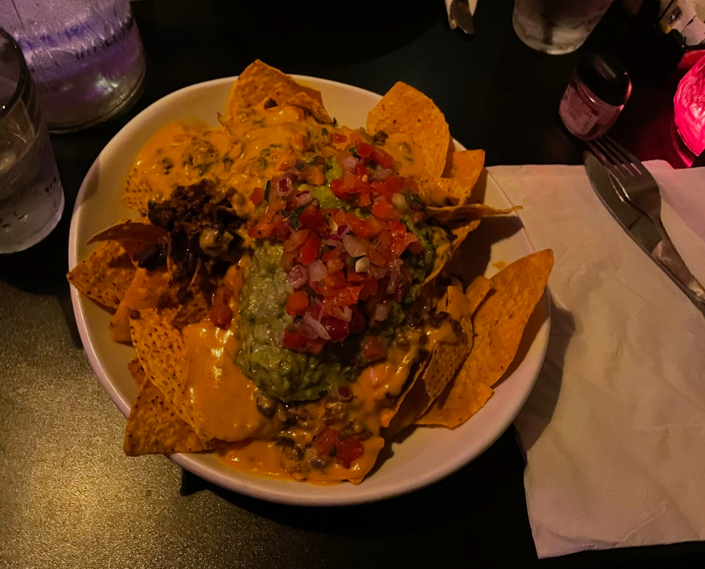
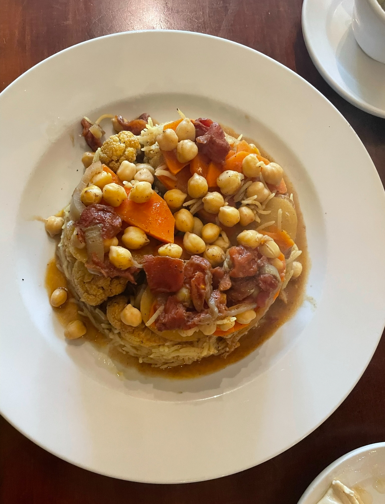
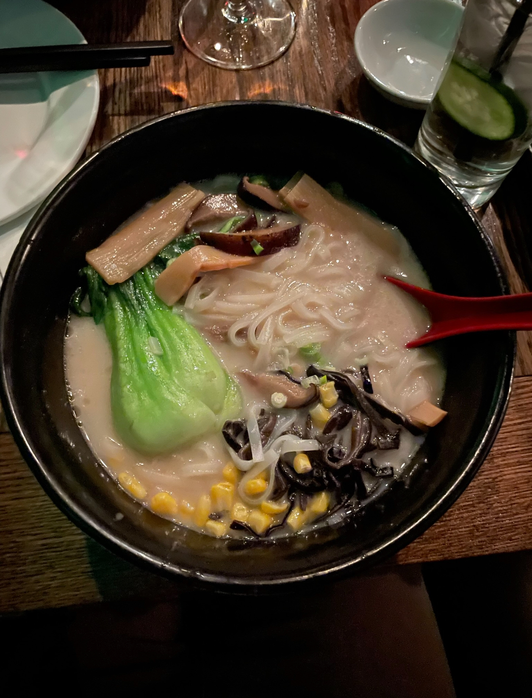

Best Food Ever!
Chicago has some of the best food in the United States. I have heard from several people that Chicago food is incomparable. We have everything from vegan food to alkaline to burgers to whatever!!!
I do not doubt that everyone will find something they like when they visit here. I’ve been living here for many years and have gotten to explore lots of restaurants here and I can't wait to explore even more. Some of my favorite restaurants are Handlebar, The Nile, and Japanese Fusion.
Handlebar
Handlebar is a vegan/vegetarian/pescatarian restaurant. Being vegan. I love going to this place. They cater to many diets and the food is good. Good food is good food no matter what it is. The picture above is their famous nachos. Those are the best vegan nachos I ever tasted. They make sure you have enough nachos, even to share.
The vegan cheese is top tier, the beans, the guacamole, everything about them. I have taken multiple friends to Handlebar who eat meat, and they even said they’re good.
They have nachos, tacos, burgers, mashed potatoes, fries, wraps, catfish, Mac & cheese, and more. However, if you don’t like tight spaces, sit on the patio. It's much better.
The Nile
The Nile is a Middle Eastern restaurant that serves Mediterranean food. It’s a cozy place with a good amount of space so everyone has wiggle room.
The Maklouba is a dish that features potatoes, carrots, rice, tomatoes, and a variety of herbs with sauce in it. It’s honestly really good, along with the hummus. You can choose yogurt or lentil soup as a side. The lentil soup is definitely preferable. If you’re looking for some Mediterranean food, this is the place to go. It’s located in Hyde Park so parking will be a bit troublesome, but the food is worth it.
Niu Japanese Fusion Lounge
This is some of the best vegan ramen I have ever had. The broth is so rich and you can eat it with rice. I believe that if you can eat the broth with rice, it’s some good ramen. Japanese Fusion Lounge is located in downtown Chicago. Parking is honestly horrible downtown, but they do have a parking garage next to the place so that makes it better.
If you want to eat some good food and then go to the AMC Theater, you can. They’re literally right next door to one another which I find cool. If you’re going on a date night. The scenery inside is so romantic and nice that I think many would love to go.
Those are just a few of my favorite restaurants in Chicago, but there are so many to choose from. Chicago is diverse and has all kinds of cultures and nationalities here. It’s beautiful to see so many different cultures and be able to partake in their food and traditions. I honestly believe many will like being able to see a part of their culture here. Not only in food but also in neighborhoods.
All photos are mine except the header photo. Marripati, Bhargava. "Sunset Photography of City." Pexels. https://www.pexels.com/photo/sunset-photography-of-city-2935097. 7/12/2024.